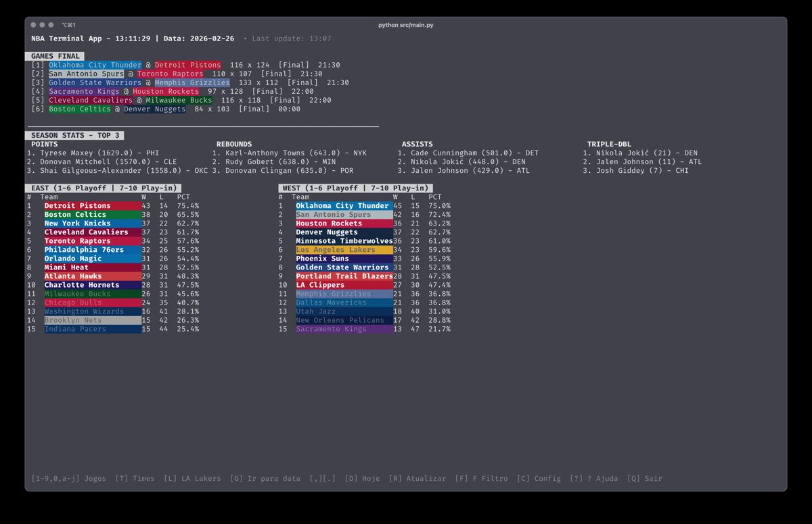
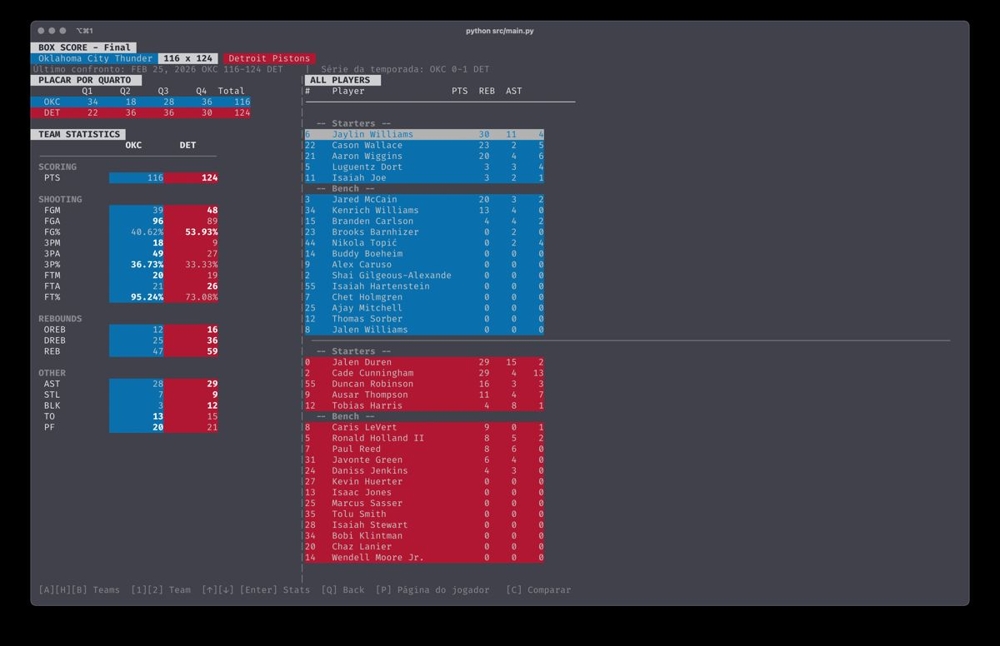
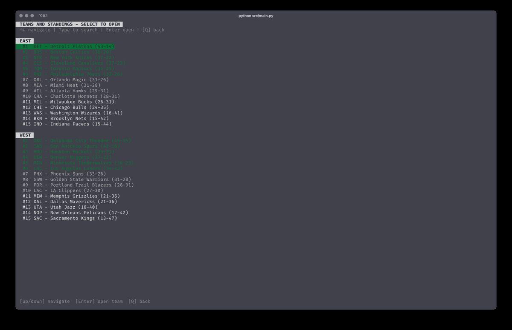
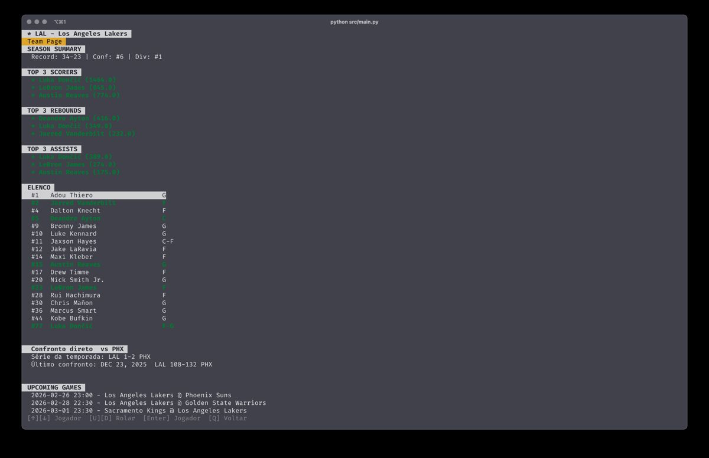
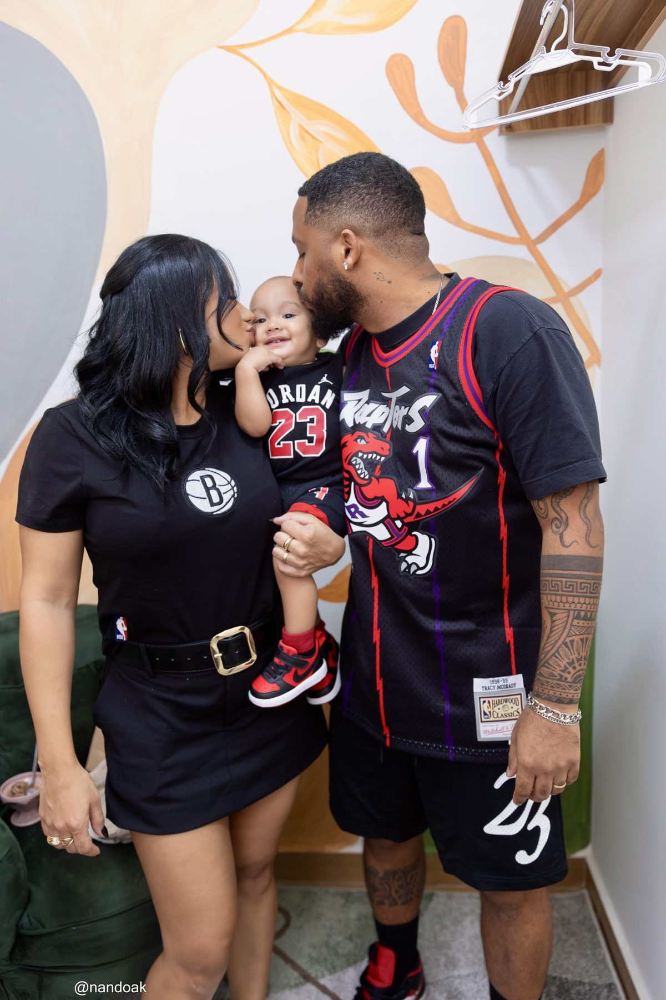
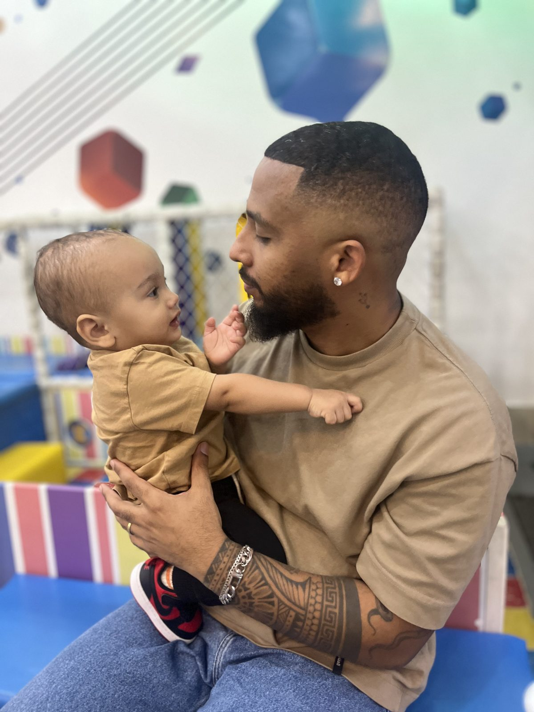

Backend engineer.
Dracula maintainer.
Most days I write Python and Clojure for work. On the side I build small terminal and backend tools, and help keep Dracula going. This page is about that side of things.
Why these exist
None of this came from a roadmap. The Flask course happened because a company asked me to teach a group of their engineers — that one was freelance work. The home gallery came out of finally backing up years of family photos off an old external hard drive and needing somewhere to actually look at them. nba-terminal started because I wanted scores and box scores without opening a browser tab. Dracula is the one that's been running the longest — I've kept the Adminer theme going since 2020.
Projects
github.com/douglasdamasioDracula for Adminer
maintainer since 2020Adminer is a popular single-file database manager, and its default look is rough. I put together a dark theme for it using the Dracula palette and opened it as a proposal on the main Dracula repo — it got adopted and became part of the official Dracula organization. It's now at 10 stars and 4 forks, generated from the shared dracula/template so it stays consistent with every other Dracula theme out there. Dracula itself ships in 200+ apps and has millions of installs across editors and terminals — and this particular theme even made it into Debian's official Adminer package.

nba-terminal
activeI follow the NBA closely and got tired of tabbing over to a browser just to check a score. nba-terminal is a TUI with a live dashboard, East/West standings, league leaders, and a full box score view with per-player stats — all keyboard driven, with a favorite team, light/dark/high-contrast themes, and an offline cache so it still works if the network drops. There's also a CLI mode for scripting: export today's games, standings, or a box score straight to JSON or CSV. I packaged it as a Homebrew tap, so installing it is just brew install.




api_4u2
freelance / teachingA company hired me to run a multi-week Python/Flask training for a group of their engineers — anywhere from five to fifteen people at a time, depending on the cohort. This repo is the course material: routing, request handling, and building a working REST API from scratch, the way I taught it.
home-gallery-frontend
personalI recovered years of family photos from an old external hard drive and needed a way to actually browse them instead of leaving them buried in folders. This is the frontend for that — a Google Photos-style grid grouped by date, with infinite scroll, lazy-loaded thumbnails, a fullscreen viewer with keyboard navigation, and filters by type and date range. Built to talk to a small Python backend that generates the thumbnails.
Family
Everything above is a weekend or evening project. The reason I have the energy for any of it is these two — my wife and son. They're the reason I build things, and the reason I care about doing work I can be proud of.


About / résumé
The short version, for anyone hiring: 10+ years as a software engineer, the last several focused on distributed systems — including four years at Nubank building and running payment authorization for 100M+ customers across five countries. Full experience, stack, and background are on my résumé.
→ douglasdamasio.cv